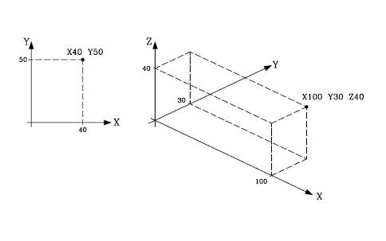
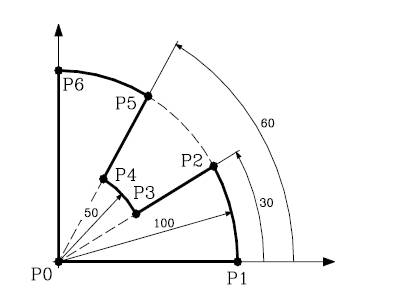
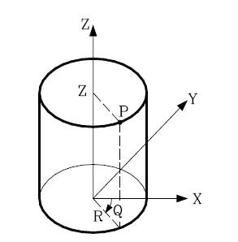
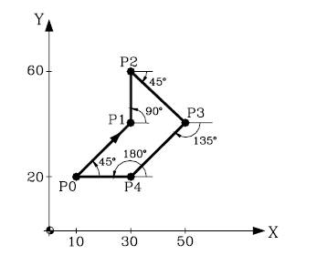

坐标编程
CNC 允许从 9 根 X, Y, Z, U, V, W, A, B, C 可能的轴中最多选择 7 根。
这些轴可以是线性轴，线性定位轴，旋转轴，旋转定位轴或分度旋转轴 （定位在整 数角度），根据每根轴的机床参数 “AXISTYPE” 设定。
为了选择最合适的编程坐标系统，CNC 具有下列坐标类型：
. 笛卡尔坐标
. 极坐标
. 圆柱坐标
. 角度和笛卡尔坐标
笛卡尔坐标
迪卡尔坐标由平面上的 2 根轴和空间的 3 根或更多的轴定义。
这些轴的原点，即 X Y Z 各轴的交点，叫作笛卡尔原点或坐标系的零点。
机床上的不同点，由轴的坐标表示，有 2 个，3 个，4 个或 5 个坐标。
轴的坐标编程时，用轴的字母 (X,Y,Z,U,V,W,A,B,C, 总是按这种顺序 ) 后接坐标值组成。
坐标的值是绝对或增量坐标值，取决于是否工作在 G90 还是 G91，它的编程格式为 ±5.5

极坐标
当出现圆弧图形或角度尺寸时， 平面上的不同点的坐标 （2 轴）用极坐标表示更为容易。
参考点叫作极坐标原点， 它是极坐标系统的起始点。
该坐标下的点可以定义为：
. 半径 (R), 极坐标原点和该点之间的距离。
. 极角 (Q), 由横坐标轴和连接极坐标原点和该点的直线形成 ( 度为单位 )。
R 和 Q 的值可以是绝对的或增量的取决于 G90 或 G91 的工作方式，它们的编程格
式为 R5.5 Q±5.5，半径值总是正的。
R 和 Q 是增量坐标编程时，它们的编程格式是 R±5.5 Q±5.5。
在用增量坐标编程时，允许编写负的 R ，但赋予半径的结果总是正的。
如果在编写程序时， Q 的值大于 360 度，系统将用 360 度分割。因此，Q420 与 Q60 相同 , Q-420 与 Q-60 相同
编程实例：假定极坐标原点位于坐标原点。

绝对坐标：
G90 X0 Y0 ; 点 P0
G01 R100 Q0 ; 点 P1，直线 (G01)
G03 Q30 ; 点 P2，圆弧 (G03)
G01 R50 Q30 ; 点 P3，直线 (G01)
G03 Q60 ; 点 P4，圆弧 (G03)
G01 R100 Q60 ; 点 P5，直线 (G01)
G03 Q90 ; 点 P6，圆弧 (G03)
G01 R0 Q90 ; 点 P0，直线 (G01)
增量坐标：
G90 X0 Y0 ; 点 P0
G91 G01 R100 Q0 ; 点 P1，直线 (G01)
G03 Q30 ; 点 P2，圆弧 (G03)
G01 R-50 Q0 ; 点 P3，直线 (G01)
G03 Q30 ; 点 P4，圆弧 (G03)
G01 R50 Q0 ; 点 P5，直线 (G01)
G03 Q30 ; 点 P6，圆弧 (G03)
G01 R-100 Q0 ; 点 P0，直线 (G01)
圆柱坐标
要定义空间的一个点，可以使用圆柱坐标和笛卡尔坐标系。
该坐标系中的点可以定义为：

该点在主平面的投影用极坐标定义 (R Q)。
其余轴用笛卡尔坐标系定义。
例如：
R30 Q10 Z100
R20 Q45 Z10 V30 A20
角度和一个笛卡尔坐标
主平面上的点可以用一个迪卡尔坐标和它前一路径的退出角度来定义。
下面的例子中假定主平面为 XY:

X10 Y20 ; 点 P0，起点
Q45 X30 ; 点 P1
Q90 Y60 ; 点 P2
Q-45 X50 ; 点 P3
Q-135 Y20 ; 点 P4
Q180 X10 ; 点 P0